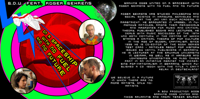

BARKING DOGS UNITED
----------------------------------------------------------------------------------------------------------------------------
NEWS ABOUT PROJECTS TEXT LINKS CONTACT
| Artist
Duo BARKING DOGS UNITED ---------------------------------------------------------------------------------------------------------------------------- NEWS ABOUT PROJECTS TEXT LINKS CONTACT |
| Please
select a project: 2008 What We Is Want What You Want SIZE MATTERZ 2007 Bis Auf Weiteres... 2006 On A Spaceship With No Fuel And No Future Carwash iForgive / iForget 2005 The Wild Bunch |
Barking Dogs United Featuring Roger
Behrens: On A Spaceship With No Fuel And No Future.
Barking Dogs United interview Roger Behrens about pop music, art and social affairs. Radio feature, 1h 45min, Weimar, 2006. Produced for the Art Wave Radio official web radio of the 1st Athens Biennal.  Sample 1 - Sample 2 - Sample 3 - Sample 4 Roger Behrens has studied Philosophy and Social science in Hamburg, Berkeley and at the Jan van Eyck Academy in Maastricht. He graduated in Kassel. In numerous articles, among them periodicals and magazines for music and critical theory, published books and lectures, he deals with Music sociology of the 19th und 20th century, in the centre of which stands a critical theory of pop culture in the age of global capitalism. Since 1998 he is co-editor of the book series test card – articles about pop history issued by Ventil publishers in Germany. He is lecturer at the Bauhaus University in Weimar, as well as in Hamburg and Lühneburg universities. He also takes part in an initiative against the increasing pop-nationalism in germany, which published a CD -book with the title “I Can't Relax in Deutschland". All content copyright 2006 nikosarvanitis.com - all rights reserved |